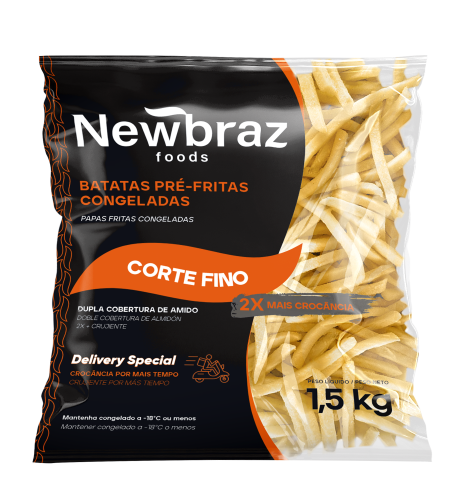

Batata Congelada 6mm

Peso: 1,5 kg
Descrição: Batatas pré-fritas congeladas em corte fino (6mm), com cobertura especial que garante crocância. Ideal para delivery e estabelecimentos que priorizam textura.
Preparação: Fritar diretamente congelado em óleo a 180°C por 2-3 minutos. Mantém a crocância mesmo após algum tempo fora do óleo.
Ingredientes: Batata, óleo vegetal, cobertura de amido, conservantes permitidos.
Diferenciais: Corte extra fino que mantém crocância por mais tempo, cobertura especial que reduz absorção de óleo, ideal para delivery.
Delivery Special: Formulação especial para manter qualidade durante transporte.
Solicitar Orçamento